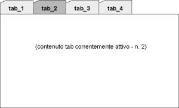

UI Panels - scheda del pannello [ TabSetPanel]
TabSetPanel]
In questa scheda è descritto il pannello TabSetPanel, in termini di:
- riferimento alla documentazione di dettaglio dell'elemento del metamodello utilizzabile durante la modellazione
- uno o più snapshot che rappresentano graficamente il pannello
- una descrizione del pannello che ne descrive l'utilizzo e le possibili varianti
- elenco degli eventi gestibili (implicitamente o esplicitamente) relativamente al pannello
Identificativo e riferimenti di dettaglio
La documentazione metamodeldoc di dettaglio del pannello TabSetPanel è disponibile
qui.
Descrizione
Il TabSetPanel è un pannello utilizzato realizzare strutture organizzate
a tab. Prevede due sezioni visibili:
- la lista di " linguette " che servono per attivare i vari tab
(con evidenza visiva del tab correntemente selezionato)
- la sezione in cui viene visualizzato il contenuto del tab correntemente selezionato.
All'interno del singolo tab è possibile inserire tutte le tipologie di pannello disponibili.
Immagini esemplificative

fig.1 - esempio